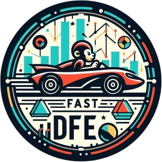
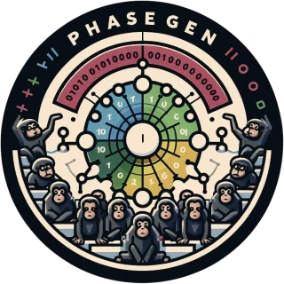
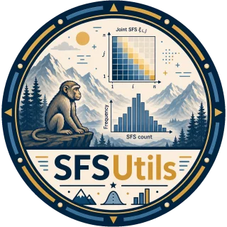
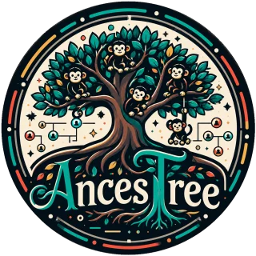

fastDFE
Distribution of fitness effects
Infers the distribution of fitness effects from site-frequency spectra, with joint inference across data sets, covariates and bootstrapping.
pip install fastdfeResearcher in statistical population genetics
Developing statistical methods and open-source software for inferring selection, demography and ancestry from genomic data.
01
I am a population geneticist working at the interface of statistics, mathematics and software engineering. I recently completed my PhD in Bioinformatics at the Bioinformatics Research Centre, Aarhus University.
My research focuses on how natural selection and demographic history shape patterns of genomic variation, and how these processes can be inferred reliably from data. I have worked on estimating how new mutations affect fitness and on exact models of how sampled genomes trace back to common ancestors. I have also developed methods for inferring the ancestral state of genetic variants. More recently, my interest has extended to ancestral recombination graphs and to making genealogy-based inference robust to the imperfect data typical of non-model organisms.
Reproducible scientific software development is central to my work. I aim for methods that are efficient, well documented, thoroughly tested and openly available, so that others can build on them with confidence.
02

Distribution of fitness effects
Infers the distribution of fitness effects from site-frequency spectra, with joint inference across data sets, covariates and bootstrapping.
pip install fastdfe
Exact coalescent distributions
Exact coalescent distributions via phase-type theory, including time-varying demography, population structure, multiple mergers and two loci.
pip install phasegen
Site-frequency spectra from variant data
Builds site-frequency spectra from VCF, VCF-Zarr and tskit input, with ancestral-allele and degeneracy annotation, stratification and filtering.
pip install sfsutils-popgen
Ancestral allele inference
Per-site posteriors over the ancestral allele from outgroups, a supplied ancestral recombination graph, or genealogies inferred from the genotypes alone.
pip install ancestree-popgen03
Ancestree: unified likelihood inference of ancestral alleles under supplied or inferred genealogies
bioRxiv
@article{sendrowski2026ancestree,
title = {Ancestree: unified likelihood inference of ancestral alleles under supplied or inferred genealogies},
author = {Sendrowski, Janek and Bataillon, Thomas},
journal = {bioRxiv},
year = {2026},
doi = {10.64898/2026.09.11.750934}
}Comparison of the distribution of fitness effects across primates
bioRxiv
@article{sendrowski2026primates,
title = {Comparison of the Distribution of Fitness Effects Across Primates},
author = {Sendrowski, Janek and Pedersen, Bjarke M. and Bergman, Juraj and Pankratov, Vasili and Bataillon, Thomas},
journal = {bioRxiv},
year = {2026},
doi = {10.64898/2026.03.25.714151}
}In Statistical Population Genomics, 2nd edition. Springer
Replicated hybrid zones reveal genomic patterns of local adaptation and introgression in spruce
Molecular Biology and Evolution 43(4): msag074
@article{nocchi2026spruce,
title = {Replicated hybrid zones reveal genomic patterns of local adaptation and introgression in spruce},
author = {Nocchi, Gabriele and Sendrowski, Janek and Shi, Andy and Boufford, Brianne and Lamothe, Manuel and Isabel, Nathalie and Yeaman, Sam},
journal = {Molecular Biology and Evolution},
volume = {43},
number = {4},
pages = {msag074},
year = {2026},
doi = {10.1093/molbev/msag074}
}Genetics 232(1): iyaf135
@article{sendrowski2025phasegen,
title = {PhaseGen: exact solutions for time-inhomogeneous multivariate coalescent distributions under diverse demographies},
author = {Sendrowski, Janek and Hobolth, Asger},
journal = {Genetics},
volume = {232},
number = {1},
pages = {iyaf135},
year = {2025},
doi = {10.1093/genetics/iyaf135}
}In silico prediction of variant effects: promises and limitations for precision plant breeding
Theoretical and Applied Genetics 138: 193
@article{sendrowski2025insilico,
title = {In silico prediction of variant effects: promises and limitations for precision plant breeding},
author = {Sendrowski, Janek and Bataillon, Thomas and Ramstein, Guillaume P.},
journal = {Theoretical and Applied Genetics},
volume = {138},
number = {8},
pages = {193},
year = {2025},
doi = {10.1007/s00122-025-04973-1}
}fastDFE: fast and flexible inference of the distribution of fitness effects
Molecular Biology and Evolution 41(5): msae070
@article{sendrowski2024fastdfe,
title = {fastDFE: Fast and Flexible Inference of the Distribution of Fitness Effects},
author = {Sendrowski, Janek and Bataillon, Thomas},
journal = {Molecular Biology and Evolution},
volume = {41},
number = {5},
pages = {msae070},
year = {2024},
doi = {10.1093/molbev/msae070}
}Teasing apart the joint effect of demography and natural selection in the birth of a contact zone
New Phytologist 236(5): 1976–1987
@article{li2022contact,
title = {Teasing apart the joint effect of demography and natural selection in the birth of a contact zone},
author = {Li, Lili and Milesi, Pascal and Tiret, Mathieu and Chen, Jun and Sendrowski, Janek and Baison, John and Chen, Zhi-qiang and Zhou, Linghua and Karlsson, Bo and Berlin, Mats and Westin, Johan and Garcia-Gil, Maria Rosario and Wu, Harry X. and Lascoux, Martin},
journal = {New Phytologist},
volume = {236},
number = {5},
pages = {1976--1987},
year = {2022},
doi = {10.1111/nph.18480}
}04
PhD in Bioinformatics, Aarhus University, Denmark
Bioinformatics Research Centre. Supervised by Thomas Bataillon and Asger Hobolth.
MSc in Bioinformatics, Uppsala University, Sweden
With Martin Lascoux, Department of Ecology and Genetics.
BSc in Applied Mathematics, Linnaeus University, Sweden
Full-stack developer, excogitat GmbH, Germany
Developed a web platform for sharing and searching translation memories among translators.